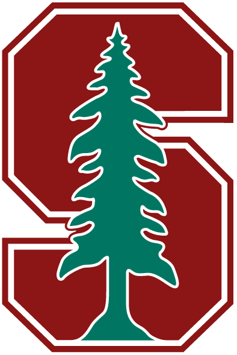
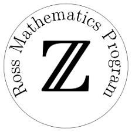

Here's a list of my educational background, including various instutions and programs where I've spent some time over the last few years.

University of California, Berkeley
PhD Candidate, Statistics
Starting in Fall 2019. To be updated soon.

Stanford University
B.S. Candidate, Mathematics with Honors
Undergraduate coursework in algebra, analysis, topology, and computer science. Graduate coursework in measure theory, functional analysis, PDEs, signal processing, information theory.
Institute for Pure and Applied Mathematics
Research in Industrial Projects 2018
Between my third and fourth year as an undergraduate, I participated in an REU at IPAM that connects undergraduate students with applied mathematics projects that are relevant in real-world industries. My project was advised by The Aerospace Corporation, and we developed a simulation framework to design, run, and analyze tests for comparing correlation methods for statistical orbit determination from noisy, incomplete data.
Institute for Computational and Experimental Research in Mathematics
Summer@ICERM 2017
After my sophomore year as an undergaduate, I spent the summer at ICERM doing an REU on topological data anlysis. My project contributed to the growing theory of TDA by finding and proving the persistent homology of the Vietoris-Rips Complexes of the regular polygons in the plane.

Ross Mathematics Program
Summer 2014
An intensive residential number theory course for high school students. This was my first experience to rigorous, proof-based mathematics, and it was an amazing learning experience for me very early on in my mathematical career!